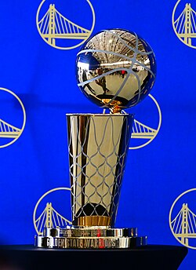
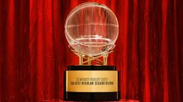

Basketball
🏀 NBA-nin yaranma mərhələləri
- Basketball Association of America (BAA) – 1946
- NBA-nin əsası Basketball Association of America (BAA) adı ilə qoyulub.
- İlk oyun 1 noyabr 1946 tarixində Toronto Huskies və New York Knicks arasında keçirilib.
- BAA-nın məqsədi basketbolu daha geniş auditoriyaya çatdırmaq və kommersiya baxımından inkişaf etdirmək idi.
National Basketball League (NBL) ilə birləşmə – 1949
-
- 1949-cu ildə BAA və NBL birləşərək National Basketball Association (NBA) adını aldı.
- Bu birləşmə NBA-nin strukturunu gücləndirdi və liqanın peşəkarlıq səviyyəsini artırdı.
🌟NBA-nin inkişaf mərhələləri
- 1950–1970-ci illər – Əsaslı formalaşma
- İlk afroamerikalı oyunçu Earl Lloyd 1950-ci ildə NBA-də çıxış etdi.
- 1960-cı illərdə Boston Celtics komandası ardıcıl çempionluqlar qazandı və NBA-nin dominant gücünə çevrildi.
- Bu dövrdə Wilt Chamberlain, Bill Russell, Jerry West kimi əfsanələr meydana çıxdı.
- 1976 – ABA ilə birləşmə
- NBA 1976-cı ildə American Basketball Association (ABA) ilə birləşdi.
- Bu birləşmə nəticəsində NBA-ya Denver Nuggets, Indiana Pacers, San Antonio Spurs və New York Nets komandaları daxil oldu.
- ABA-dan gələn slam dunk yarışması və üçlük atışları NBA-yə yeni dinamiklər gətirdi.
📺 NBA-nin qloballaşması və media gücü
- 1980–1990-cı illər – Qızıl dövr
- David Stern 1984-cü ildə komissar oldu və NBA-nin qlobal brendə çevrilməsində əsas rol oynadı.
- Magic Johnson, Larry Bird və Michael Jordan bu dövrün simvolu oldular.
- NBA oyunları beynəlxalq kanallarda yayımlanmağa başladı – bu, basketbolun dünya miqyasında populyarlaşmasına səbəb oldu.
- 1992 – Olimpiya oyunlarında “Dream Team”
- NBA oyunçuları ilk dəfə 1992 Barselona Olimpiadasında ABŞ yığmasında çıxış etdilər.
- Michael Jordan, Magic Johnson, Charles Barkley və digərləri ilə formalaşan “Dream Team” basketbolun qlobal simvoluna çevrildi.
🌍 Müasir NBA – Struktur və təsir
- Komanda sayı və bölgülər
- NBA-də 30 komanda var – 29-u ABŞ-da, 1-i Kanadada (Toronto Raptors).
- Komandalar Şərq və Qərb konfranslarına, hər biri isə 3 bölgəyə bölünür.
- Mövsüm oktyabrdan aprelə qədər davam edir, hər komanda 82 oyun keçirir.
- İqtisadi və sosial təsir
- NBA milyardlarla dollarlıq sponsorluq və yayım gəlirləri ilə dünyanın ən gəlirli idman liqalarından biridir.
- Liqa sosial ədalət, təhsil və sağlamlıq sahəsində kampaniyalar aparır.
- NBA oyunçuları tez-tez sosial məsələlərə dəstək verir – irqçilik, gender bərabərliyi və s.
🏆 Əfsanəvi oyunçular və rekordlar
Michael Jordan
– 6 dəfə NBA çempionu, 5 dəfə MVPLeBron James
– 4 dəfə çempion, 4 dəfə MVPKareem Abdul
-Jabbar – Ən çox xal vuran oyunçu (uzun illər)Stephen Curry
– Üçlük atışlarının kralı

